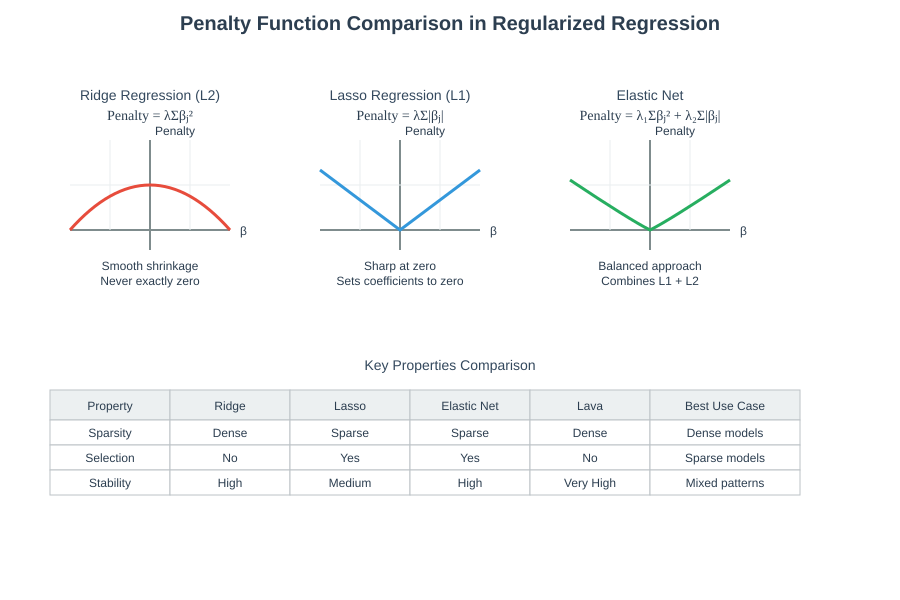
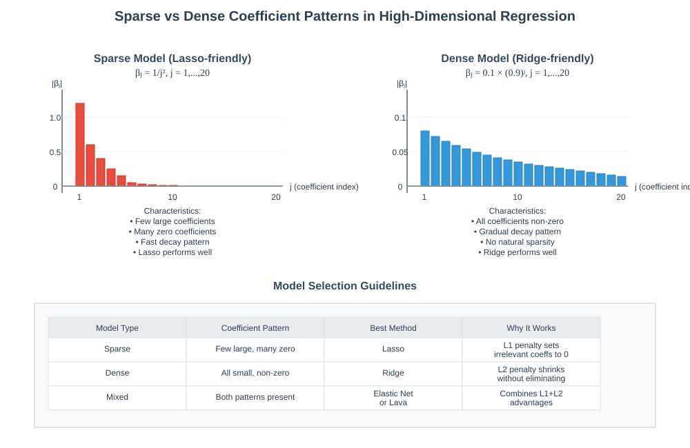
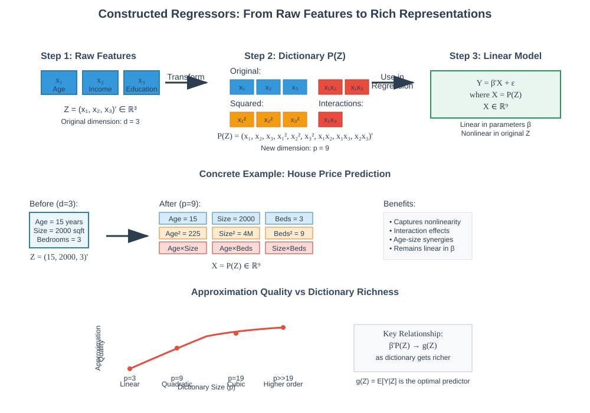
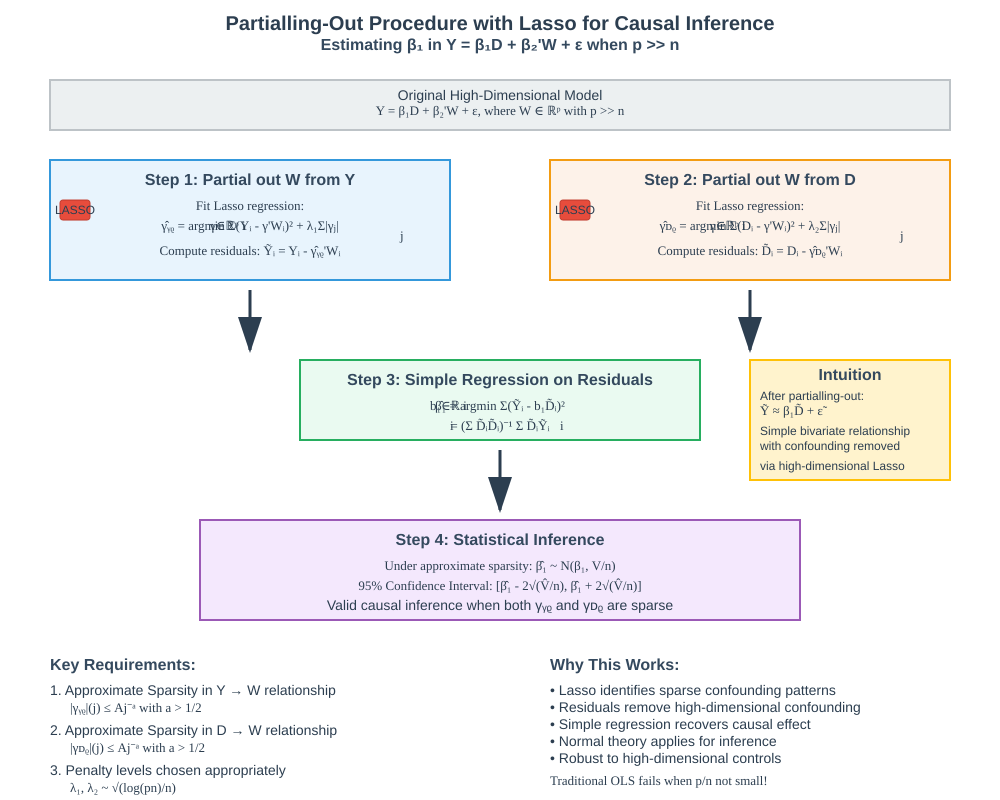

Penalized Regression Methods:

📚 Quick Navigation
- Introduction to Penalized Regression
- Ridge Regression
- Lasso Regression
- Elastic Net & Lava Regression
- Cross-Validation for Model Selection
- Constructed Regressors
- High-Dimensional Sparse Models
- Statistical Inference with Lasso
- Empirical Applications
- Model Comparison
- Implementation Resources
- References & Further Reading
🎯 Introduction to Penalized Regression
Penalized regression methods address the fundamental challenge of overfitting in high-dimensional settings where the number of predictors (p) is large relative to the number of observations (n). These methods modify the traditional least squares objective by adding penalty terms that constrain coefficient magnitudes.
The Core Problem
In classical linear regression, we seek to minimize:
Min Σ(Yi - β'Xi)²
However, when p/n is not small, this approach leads to: - Overfitting: Perfect fit to training data but poor generalization - High variance: Unstable coefficient estimates - Poor prediction: Degraded out-of-sample performance
The Penalized Solution
Penalized regression methods solve:
Min Σ(Yi - β'Xi)² + λ × Penalty(β)
Where: - λ (lambda): Penalty level controlling regularization strength - Penalty(β): Function penalizing coefficient magnitude - Goal: Balance fit quality with model complexity

Key Benefits: - Prevents overfitting through regularization - Provides stable coefficient estimates - Enables variable selection (in some methods) - Maintains good predictive performance
🏔️ Ridge Regression
Ridge regression applies L2 regularization by penalizing the sum of squared coefficients.
Mathematical Formulation
β̂(λ) = argmin Σ(Yi - β'Xi)² + λ Σβj²
β∈ℝᵖ i=1 j=1
Key Characteristics
Penalty Function: L2 norm (sum of squares) - Penalizes large coefficients more aggressively than small ones - Creates smooth, continuous shrinkage toward zero - Never sets coefficients exactly to zero
Sparsity Properties: - Dense solutions: All coefficients remain non-zero - No variable selection: Cannot eliminate irrelevant features - Shrinkage: Coefficients are shrunk but not eliminated
When to Use Ridge
Ridge regression excels in "dense" models where: - Most predictors have small but non-zero effects - True model is not sparse - Goal is prediction rather than interpretation - Multicollinearity is present
Theoretical Properties
For penalty level selection:
λ = √(Eε²) × √(2log(pn))
Where:
- Eε²: Error variance estimate
- n: Number of observations
- p: Number of predictors
🎯 Lasso Regression
LASSO (Least Absolute Shrinkage and Selection Operator) applies L1 regularization using absolute values of coefficients.
Mathematical Formulation
β̂(λ) = argmin Σ(Yi - β'Xi)² + λ Σ|βj|
β∈ℝᵖ i=1 j=1
Unique Properties
L1 Penalty Function: - Penalizes coefficients by their absolute values - Creates sharp, discontinuous shrinkage - Sets coefficients exactly to zero → Variable selection
Sparsity Induction: - Automatically performs feature selection - Produces interpretable models - Identifies most relevant predictors

Approximate Sparsity Assumption
Lasso works well under approximate sparsity:
|β|(j) ≤ Aj^(-a), a > 1/2
Where: - |β|(j): j-th largest coefficient in absolute value - A: Constant measuring decay speed - a: Decay rate parameter
This means coefficients decay fast enough that only a few are large.
Theoretical Guarantees
Under approximate sparsity conditions:
E(β'X - β̂'X)² ≤ const × Eε² × √(s log(pn)/n)
Where s is the effective dimension (number of important coefficients).
Post-Lasso Refinement
Post-Lasso method: 1. Use Lasso to select variables 2. Fit least squares on selected variables only 3. Often improves prediction over pure Lasso
⚖️ Elastic Net & Lava Regression
Elastic Net: Combining L1 and L2
Elastic Net uses both Ridge and Lasso penalties:
β̂(λ₁,λ₂) = argmin Σ(Yi - β'Xi)² + λ₁Σβj² + λ₂Σ|βj|
β∈ℝᵖ i j j
Penalty Interpretation: - Second term: Ridge penalty (L2) - Third term: Lasso penalty (L1)
Special Cases:
- λ₁ = λ₂ = 0: Ordinary least squares
- λ₁ = 0: Pure Lasso regression
- λ₂ = 0: Pure Ridge regression
- λ₁, λ₂ → ∞: All coefficients → 0
Advantages: - More flexible than Ridge or Lasso alone - Performs variable selection (unlike Ridge) - Handles correlated predictors better than Lasso - Works well with mixed sparse/dense coefficient patterns
Lava Regression: Coefficient Decomposition
Lava regression splits each coefficient: β = γ + δ
β̂(λ₁,λ₂) = γ̂(λ₁,λ₂) + δ̂(λ₁,λ₂)
Penalty Structure: - Penalize γ (gamma) like Ridge: Σγj² - Penalize δ (delta) like Lasso: Σ|δj|
Key Properties: - Least aggressive penalization among all methods - Never sets coefficients to zero → No variable selection - Excels in "sparse + dense" models - Significantly outperforms other methods in mixed scenarios

🔄 Cross-Validation for Model Selection
Cross-validation provides a principled approach to select penalty levels (λ) by estimating out-of-sample performance.
The Cross-Validation Process

Step 1: Data Partitioning
Randomly divide data into K equal-sized blocks: B₁, B₂, ..., Bₖ
Step 2: Iterative Training
For each fold k:
- Training set: All blocks except Bₖ
- Test set: Block Bₖ only
- Fit model f̂₋ₖ(X; θ) using training data
- Calculate MSE on test block
Step 3: Performance Aggregation
CV-MSE(θ) = (1/K) Σ MSEₖ(θ)
k=1
Step 4: Optimal Parameter Selection
θ̂ = argmin CV-MSE(θ)
θ
Mathematical Framework
For block Bₖ with size m:
MSEₖ(θ) = (1/m) Σ (Yi - f̂₋ₖ(Xi; θ))²
i∈Bₖ
Final cross-validated MSE:
CV-MSE(θ) = (1/K) Σ MSEₖ(θ)
k=1
Practical Considerations
Choosing K: - K = 5 or K = 10: Common choices balancing bias/variance - Leave-one-out (K = n): Unbiased but high variance - K = 3: Faster computation, slightly more bias
Theoretical Properties: - Good practical performance in high-dimensional settings - Theoretical properties not fully understood yet - Recommended to validate with separate test data
🔧 Constructed Regressors
Constructed regressors expand the feature space through nonlinear transformations of raw predictors, enabling more flexible models while maintaining linear-in-parameters structure.
Motivation
Goal: Capture nonlinear relationships while using linear regression methods
Example: From 3 raw features {x₁, x₂, x₃}, create:
Dictionary = {x₁x₂, x₂x₃, x₃x₁, x₁², x₂², x₃², x₁³, x₂³, x₃³}
Result: 3 original + 9 constructed = 12 total features
Mathematical Framework
Raw Regressors: Z ∈ ℝᵈ
Transformation Dictionary: P(Z) = (P₁(Z), ..., Pₚ(Z))'
Constructed Model:
Y = β'X + ε = β'P(Z) + ε
Linear in Parameters: Despite nonlinear relationship with Z, the model remains linear in β and constructed regressors X = P(Z).

Approximation Quality
Best Prediction Rule: Conditional expectation g(Z) = E(Y|Z)
Linear Approximation: β'P(Z) approximates g(Z)
Approximation Error:
E(Y - β'P(Z))² = E(g(Z) - β'P(Z))² + const
Example: Polynomial Approximation
True Function: g(Z) = exp(4Z), Z ~ Uniform(0,1)
Polynomial Dictionary: P(Z) = (1, Z, Z², ..., Z^(p-1))'
Approximation Quality by Order: - p = 1: Constant approximation (very poor) - p = 2: Linear approximation (poor) - p = 3: Quadratic approximation (good) - p = 4: Cubic approximation (excellent)
Key Insight: Richer dictionaries enable better approximation of complex functions.
Applications
House Pricing: Building class, road access, property shape, proximity features
Demand Analysis: Price and product characteristic interactions
Court Decisions: Judge characteristic combinations
📊 High-Dimensional Sparse Models
High-dimensional settings (p ≫ n) require specialized approaches. Classical least squares fails due to overfitting, necessitating sparsity assumptions and penalized methods.
The High-Dimensional Challenge
Problem Setup:
- p: Number of predictors
- n: Number of observations
- Condition: p ≫ n (much larger)
Classical Failure: Ordinary least squares produces: - Perfect training fit but poor generalization - Unstable, high-variance estimates - Overfitting to sample-specific noise
Approximate Sparsity Framework
Definition: Only a small subset of predictors have large coefficients.
Formal Condition:
|β|(j) ≤ Aj^(-a), a > 1/2, j = 1,...,p
Interpretation: - Coefficients decay fast when sorted by magnitude - Only first few coefficients are practically important - Effective dimension s ≪ p captures model complexity
Lasso in High Dimensions
Objective Function:
Min Σ(Yi - β'Xi)² + λΣ|βj|
β i=1 j=1
Penalty Level Selection:
λ = √(Eε²) × √(2log(pn))
Sparsity Induction: Lasso automatically: - Identifies important predictors - Sets irrelevant coefficients to zero - Provides interpretable models
Effective Dimension:
s = const × n^(1/2a)
Where a is the decay rate from approximate sparsity.
Performance Guarantees
Main Theorem: Under regularity and approximate sparsity conditions:
√E(β'X - β̂'X)² ≤ const × √Eε² × √(s log(pn)/n)
Key Requirement: Effective dimension s must satisfy:
s ≪ n/log(pn)
Implications: - Lasso approximates best linear predictor well - Performance depends on effective (not total) dimension - Method won't overfit under sparsity
📈 Statistical Inference with Lasso
Moving beyond prediction, we often need statistical inference: confidence intervals, hypothesis tests, and uncertainty quantification for individual coefficients.
The Partialling-Out Approach
Target: Estimate coefficient β₁ for regressor D in:
Y = β₁D + β₂'W + ε
Where: - D: Target regressor of interest - W: High-dimensional control variables (p-dimensional)
Inference Question: How does Y change when D increases by one unit, holding W fixed?
Two-Stage Procedure

Stage 1: Remove W Effects
Partial out W from Y:
Ỹ = Y - γ̂ᵧw'W, γ̂ᵧw = argmin E(Y - γ'W)² + λ₁Σ|γⱼ|
Partial out W from D:
D̃ = D - γ̂ᴰw'W, γ̂ᴰw = argmin E(D - γ'W)² + λ₂Σ|γⱼ|
Stage 2: Simple Regression
β̂₁ = argmin Eₙ(Ỹᵢ - b₁D̃ᵢ)² = (EₙD̃ᵢD̃ᵢ)⁻¹EₙD̃ᵢỸᵢ
Theoretical Properties
Main Result: Under approximate sparsity in both partialling-out steps:
β̂₁ ~ N(β₁, V/n)
Where V captures the variance structure:
V = (ED̃²)⁻¹E(D̃²ε²)(ED̃²)⁻¹
Confidence Intervals
Standard Error: SE(β̂₁) = √(V̂/n)
95% Confidence Interval:
[β̂₁ - 2√(V̂/n), β̂₁ + 2√(V̂/n)]
Key Requirements:
- Approximate sparsity in γᵧw (Y on W regression)
- Approximate sparsity in γᴰw (D on W regression)
- Both coefficient sequences must decay sufficiently fast
🌍 Empirical Applications
Economic Growth Convergence Study
Research Question: Do poor countries grow faster than rich countries, controlling for institutional and educational factors?
Data: 90 countries, ~60 control variables (Robert Barro and John Wiley dataset)
Model:
Y = β₁D + β₂'W + ε
Where: - Y: Annual GDP growth rate per capita - D: Initial wealth level (log GDP per capita) - W: Education, institutions, trade openness, political stability
High-Dimensional Challenge: p/n ≈ 60/90 ≈ 0.67 (not small)
Results Comparison
| Method | Estimate | Std. Error | 95% Conf. Interval |
|---|---|---|---|
| Least Squares | -0.009 | 0.030 | [-0.069, 0.050] |
| Partialling-out via Lasso | -0.044 | 0.015 | [-0.075, -0.014] |
Key Findings:
Least Squares Performance: - High standard error (0.030) - Confidence interval includes positive values - Cannot reject null hypothesis of no convergence - Noisy, inconclusive results
Lasso-Based Performance: - Much lower standard error (0.015) - Confidence interval entirely negative - Strong evidence for convergence hypothesis - Precise, conclusive results
Economic Interpretation: - Convergence rate: -4.4% annually - Poor countries grow 4.4% faster than rich countries (controlling for W) - Strong empirical support for Solow Growth Model predictions
Statistical Lesson: High-dimensional controls require specialized methods. Classical approaches fail where modern penalized methods succeed.
⚖️ Model Comparison
| Method | Penalty Function | Sparsity | Variable Selection | Best Use Case |
|---|---|---|---|---|
| Ridge | L2: Σβⱼ² | Dense | No | Dense models, multicollinearity |
| Lasso | L1: Σ|βⱼ| | Sparse | Yes | Sparse models, interpretation |
| Elastic Net | L1 + L2 Combined | Sparse | Yes | Mixed sparse/dense |
| Lava | Split: γ²+|δ| | Dense | No | Sparse + dense models |
Penalty Function Characteristics
| Property | Ridge | Lasso | Elastic Net | Lava |
|---|---|---|---|---|
| Shrinkage Type | Smooth | Sharp | Mixed | Gentle |
| Zero Coefficients | Never | Frequently | Sometimes | Never |
| Correlated Predictors | Stable | Unstable | Stable | Very Stable |
| Computational Cost | Low | Medium | Medium | High |
Selection Guidelines
Choose Ridge when:
- Most predictors are relevant
- High multicollinearity present
- Prediction focus over interpretation
- Stable coefficient estimates needed
Choose Lasso when: - Sparse true model expected - Variable selection required - Interpretability is crucial - Clear signal-to-noise ratio
Choose Elastic Net when: - Mixed sparse/dense structure - Correlated predictor groups - Need both selection and stability - Uncertain about sparsity level
Choose Lava when: - Complex sparse + dense patterns - Maximum prediction accuracy - Computational resources available - Non-sparse but structured models
💻 Implementation Resources
Google Colab Notebooks

Interactive Tutorials:
- Ridge, Lasso, Elastic Net implementations
- Cross-validation for hyperparameter tuning
- High-dimensional simulation studies
- Real-world economic data analysis
Python Libraries
Scikit-learn: Standard implementations
from sklearn.linear_model import Ridge, Lasso, ElasticNet
from sklearn.model_selection import cross_val_score
GLMnet: Efficient coordinate descent
from glmnet import ElasticNet # Advanced features
R Packages
glmnet: Gold standard for penalized regression
library(glmnet)
cv_lasso <- cv.glmnet(X, y, alpha=1)
caret: Unified machine learning interface
library(caret)
train(Y ~ ., method="glmnet", data=data)
Model Resources
Hugging Face Models: - sklearn-lasso-regression - penalized-regression-toolkit
Key Papers: - Tibshirani (1996): Original Lasso paper [arXiv:stat/9501031] - Zou & Hastie (2005): Elastic Net [arXiv:stat/0501030]
📚 References & Further Reading
Foundational Papers
-
Tibshirani, R. (1996). Regression shrinkage and selection via the lasso. Journal of the Royal Statistical Society, 58(1), 267-288. [DOI]
-
Zou, H., & Hastie, T. (2005). Regularization and variable selection via the elastic net. Journal of the Royal Statistical Society, 67(2), 301-320. [DOI]
-
Hoerl, A. E., & Kennard, R. W. (1970). Ridge regression: Biased estimation for nonorthogonal problems. Technometrics, 12(1), 55-67. [DOI]
Modern Theory
-
Bühlmann, P., & Van De Geer, S. (2011). Statistics for High-Dimensional Data: Methods, Theory and Applications. Springer. [DOI]
-
Hastie, T., Tibshirani, R., & Wainwright, M. (2015). Statistical Learning with Sparsity: The Lasso and Generalizations. CRC Press. [arXiv:1501.03449]
Applications & Methods
-
Belloni, A., Chernozhukov, V., & Hansen, C. (2014). Inference on treatment effects after selection among high-dimensional controls. Review of Economic Studies, 81(2), 608-650. [DOI]
-
James, G., Witten, D., Hastie, T., & Tibshirani, R. (2021). An Introduction to Statistical Learning with Applications in R (2nd ed.). Springer. [Free PDF]
-
Friedman, J., Hastie, T., & Tibshirani, R. (2010). Regularization paths for generalized linear models via coordinate descent. Journal of Statistical Software, 33(1), 1-22. [DOI]
📝 Documentation created for comprehensive understanding of penalized regression methods in machine learning and statistics. For updates and additional resources, visit our GitHub repository.